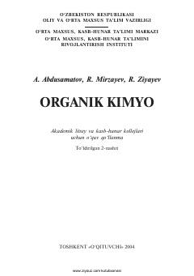

OKAkademik litsey va kollejlar uchun organik kimyo fanidan o'quv qo'llanma.
Ushbu o'quv qo'llanma akademik litsey va kasb-hunar kollejlari o'quvchilari uchun mo'ljallangan bo'lib, organik kimyoning nazariy asoslari, birikmalar sinflari, ularning olinishi va xalq xo'jaligidagi ahamiyatini yoritadi. Kitobda organik kimyoning rivojlanish tarixi, jahon va O'zbekiston kimyogarlarining ilmiy hissalari hamda organik birikmalarning tabiiy manbalari batafsil bayon etilgan.